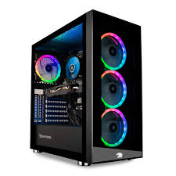

By: Matthew Perez
In today’s day and age of advancing technology, being able to build and optimize a PC opens the door to a whole new world of possibilities. Whether you are using it for professional work, hardcore gaming, or just basic everyday entertainment, a PC can do it all and more.
